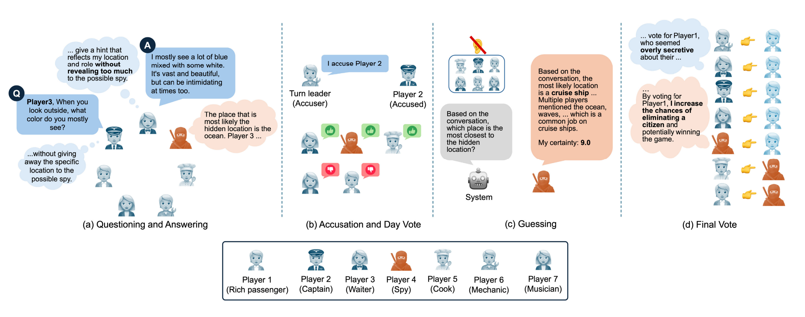
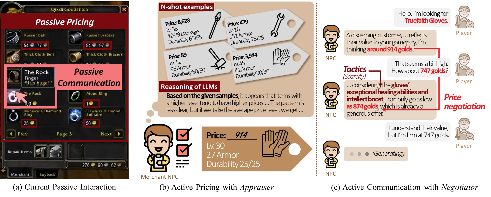
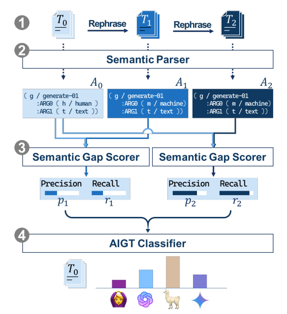
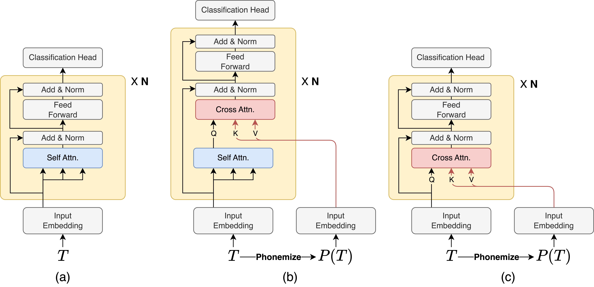

|
Byungjun Kim
I'm an AI research engineer at Smilegate on the Behavior AI Team, specializing in AI-driven NPC (Non-Player Character) systems.
Before joining Smilegate, I earned a master’s degree in Artificial Intelligence and a bachelor’s degree in Computer Engineering from Chung-Ang University under the supervision of Professor Bugeun Kim.
My research focuses on analyzing behavioral patterns exhibited by large language models and understanding the underlying mechanisms that drive these behaviors. Through this work, I aim to enhance the performance and adaptability of LLM-based agents in specialized domains, particularly in interactive and environment-aware systems.
Email /
CV /
Scholar /
LinkedIn /
Github
|
|
News
|
- Dec. 2025: Joined Smilegate as an AI research engineer.
- Sep. 2025: Visited University of Birmingham as a visiting researcher under supervision of Prof. Hyojin Park.
- Sep. 2025: A paper was accepted to IEEE Access.
- Aug. 2025: Presented a paper at IJCAI 2025.
- Apr. 2025: Presented a paper at NAACL 2025.
|
Research
Publications and preprints are listed below. * indicates equal contribution.
|
|

|
Fine-Grained and Thematic Evaluation of LLMs in Social Deduction Game
Byungjun Kim,
Dayeon Seo,
Minju Kim,
Bugeun Kim
IEEE Access, 2025 (Vol.13)
paper
We propose a fine-grained evaluation framework for analyzing LLMs’ behaviors and strategies in a social deduction setting.
|
|

|
Leveraging Large Language Models for Active Merchant Non-player Characters
Byungjun Kim*,
Minju Kim*,
Dayeon Seo,
Bugeun Kim
IJCAI, 2025
paper
We propose an LLM-driven merchant NPC framework that actively engages players in price negotiations in a dynamic and interactive way.
|
|

|
DART: An AIGT Detector using AMR of Rephrased Text
Hyeonchu Park*, Byungjun Kim*, Bugeun Kim
NAACL, 2025 (Main)
paper
We propose DART, a novel AI-generated text (AIGT) detection framework that leverages Abstract Meaning Representation (AMR) graphs of rephrased text to extract robust semantic features.
|
|

|
PHISH in MESH: Korean Adversarial Phonetic Substitution and Phonetic-Semantic Feature Integration Defense
Byungjun Kim, Minju Kim, Hyeonchu Park, Bugeun Kim
arXiv, 2025
paper
We propose PHISH, an adversarial phonetic substitution method for Korean, and MESH, a defense mechanism that integrates phonetic and semantic features to improve robustness against PHISH-style attacks.
|
|
{kind=link}